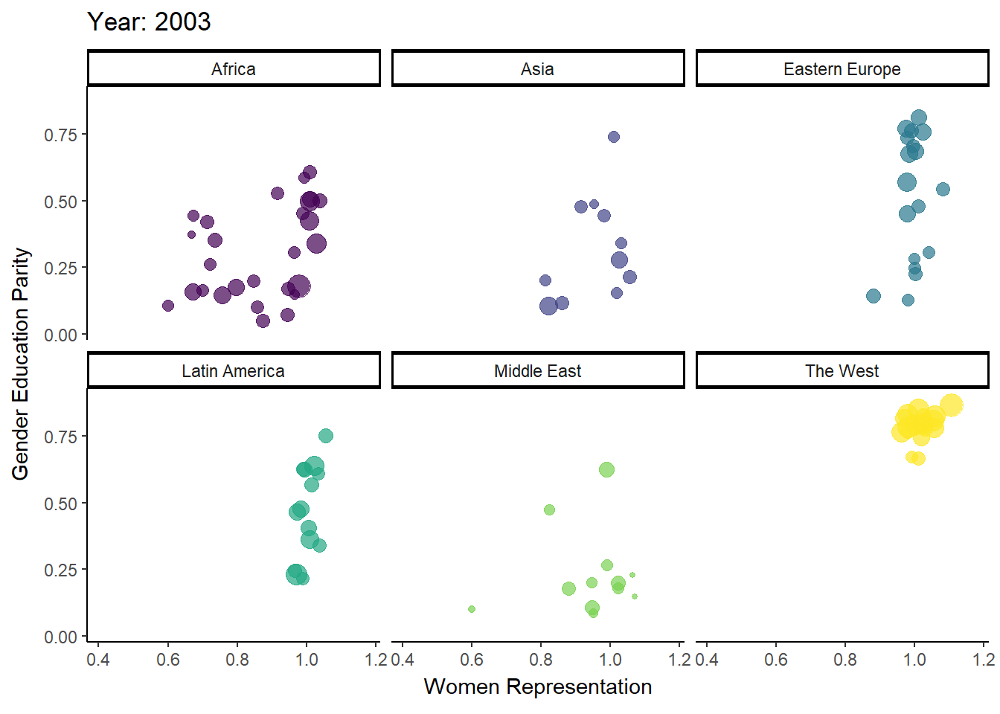

The Presence of Women in Governance is Positively Correlated with Women’s Empowerment across Regions
Deviations from expected patterns are found at the country level
Author
Kara C. Hoover
Published
October 29, 2023
Abstract
To investigate the role of proportional representation (PR) in enhancing the involvement of underrepresented groups in government, I focused on women’s participation at both country and regional levels. Women’s representation in national parliaments served as an indicator of PR, examined alongside three key variables reflecting women’s empowerment: egalitarian democracy (ensuring equal participation across all groups), suffrage (formal), and gender parity in education. While a robust relationship was observed at the regional level, certain countries exhibited nuanced deviations from expected patterns. The variables chosen impact representation in government but numerous country-level case studies reveal different place-specific trends. A more robust analysis could employ a random forest model to discern the multifaceted factors contributing to women’s empowerment, facilitating predictive insights. The analysis employed a comprehensive approach, incorporating summary statistics, pairwise correlations, and dynamic scatterplots over time to delve into the complex interplay among these variables.
Summary of Research Question and Findings
Norris (2006) argues that the electoral system’s fundamental type is paramount in fostering inclusivity within elected bodies. Specifically, she contends that proportional electoral systems, as exemplified in the Nordics, Netherlands, and Rwanda, facilitate greater success for women in both nomination and election processes. My examination centers suffrage and gender educational parity as potentially equally strong influences on governmental inclusivity. In other words, I question if proportional represenation is sufficient and ask if we also need to focus on women’s right to vote and have equal and equitable access to education.
I found a high correlation among all variables analyzed, with mean data consistently ranking regions similarly, albeit with slight rank order discrepancies among middle-tier regions. However, examining median values and the interquartile range (IQR) reveals regional variations. Subsequently, a focused examination of select countries reveals divergences in pattern consistency, undermining (to a limited extent) Norris’s regional framework. Notably, affluent countries worldwide, affluent countries within each region, and the exemplary cases highlighted by Norris—particularly those displaying unexpectedly high levels of women’s empowerment within democratic contexts—are scrutinized.
Localized studies may uncover distinct influential variables contingent upon geographical or trait-based considerations. I suggest a comprehensive approach integrating random forest analysis to traverse the breadth of women’s empowerment variables, coupled with subsequent regression trees spotlighting the most salient factors. While women’s representation ostensibly aligns with egalitarian democracy on a macroscopic scale, place-specific variables may disrupt this association. An anthropological lens suggests that a culture’s distinct values often permeate its governance, underscoring the overlooked disruption within political science’s approach to the issue.
The Data
Two measures of democracy from the V-Dem dataset
Two metrics assessing democracy from the Varieties of Democracy (V-Dem) dataset were examined in this assignment: the Egalitarian Democracy Index (v2x_egaldem) and the Share of Population with Suffrage (v2x_suffr). The Egalitarian Democracy Index evaluates a country or region based on the degree of inequality hindering the exercise of formal rights and liberties. As the value approaches the lower end of the interval variable (0), citizens from various social strata encounter increasing limitations, resulting in unequal access to democratic participation. Conversely, nearing the upper end of the interval variable (1) signifies equal protection of rights and freedoms for individuals across all social groups, alongside equitable resource distribution and access to power. The Share of Population with Suffrage solely reflects suffrage as mandated by law, disregarding social barriers to voting. However, when juxtaposed with the first measure, it offers insight into countries or regions where legal constraints and inequity restrict participation.
Two Measures of Women’s Empowerment from the World Bank dataset
Two additional data points were acquired from the World Bank dataset, ‘wbstats’: women’s representation in governance (SG.GEN.PARL.ZS) and gender parity in primary and secondary education (SE.ENR.PRSC.FM.ZS). Women’s representation refers to the percentage of women representing constituents at the national level, while gender parity in education is the ratio of female gross enrollment in primary and secondary schools to males enrolled in primary and secondary schools (both public and private). A ratio value of less than 1 indicates a male advantage in learning opportunities, whereas a ratio value greater than 1 suggests a female advantage. Education plays a crucial role in women’s empowerment, as it is closely tied to improved health and economic outcomes for women and children, as well as lower birth rates, which reduces resource stress. The two selected variables represent opposite stages of life history. Education enhances the status and capabilities of women, thereby enabling them to achieve national standing through elected roles in government. The visibility of women exercising their capabilities as elected officials further motivates females to excel in educational opportunities.
Code
#load packageslibrary(vdemdata); library(wbstats); library(countrycode)library(tidyverse); library(grateful); library(psych)library(janitor); library(glue); library(readr)library(gganimate); library(gifski)#get vedem datademocracy <- vdem |>filter(year >=2003) |>select(country = country_name, vDemCtryId = country_id, year,egalDem = v2x_egaldem, suff = v2x_suffr,region = e_regionpol_6C ) |>mutate(region =case_match(region, 1~"Eastern Europe", 2~"Latin America", 3~"Middle East", 4~"Africa", 5~"The West", 6~"Asia") )# store indicators from World Bankindicators <-c('womenRep'='SG.GEN.PARL.ZS', 'eduEqual'='SE.ENR.PRSC.FM.ZS')# download world bank datawomenEmp <-wb_data(indicators, mrv=50) |>select(!iso2c) |>rename(year = date)# VDEM data employs ISO3 codes, whereas World Bank data employs country names. # map country names to ISO3 codes for mergingdemocracy <- democracy |>mutate(iso3c =countrycode(sourcevar = vDemCtryId, origin ="vdem", destination ="wb"))# Perform left join using common iso3c variable and yeardemWomen <-left_join(democracy, womenEmp, by =c("iso3c", "year")) |>rename(country = country.x) |># rename country.x, keep vdem countryselect(!country.y) # crop country.y, drop wb country# check natext1 = ("Missing cases for women's representation: ") text2 = ("Missing cases for educational equality: ") sum1 =sum(is.na(womenEmp$womenRep)) #6144 missing casessum2 =sum(is.na(womenEmp$eduEqual)) #5257 missing casesglue({text1}, {sum1})
Missing cases for women's representation: 6144
Code
glue({text2}, {sum2})
Missing cases for educational equality: 5257
There is a strong positive correlation between democracy and women’s empowerment
The appendix presents summary statistics for the mean, median, and inter-quartile range of the women’s empowerment variables (suffrace, educational equality, and women’s representation in governance. Depending on the specific statistic employed, the rankings of countries on key variables may vary, while the regional patterns remain consistent.
The correlation plot depicted below demonstrates a significant correlation between democracy and women’s empowerment. In this graphic representation, Pearson correlation coefficients are displayed above the diagonal (an asterisk denotes a p-value < 0.05), histograms appear on the diagonal, and bivariate scatterplots are showcased below the diagonal. To facilitate interpretation of the relationship between variables, locally weighted smoothing (loess) has been applied to the scatterplots, smoothing the regression through the data. The argument smooth.scatter has been utilized to soften individual data points, imparting a visual akin to a density map, enhancing the comprehensibility of the scatterplots. Furthermore, density ellipses are employed to highlight the densest regions of the scatterplots, aiding in the visualization of outlier data points and elucidating the strength and direction of the correlation.
Women’s Representation and Educational Equality: African Countries Exhibit Positive Change and the West Remains Consistently High
The analysis so far has focused on aggregates spanning a 20-year period to explore general associations. But, do these patterns evolve over time? The following visualization, employing gganimate and gifski, animates these dynamics year by year. It portrays gender parity in education along the x-axis, egalitarian democracy along the y-axis, point size corresponding to women’s representation values, and color representing different regions. Notably, the Western and Eastern European regions exhibit relatively static trends over time, while Africa showcases significant variation. With 55 diverse countries, Africa encompasses the bulk of global cultural and genetic diversity, coupled with significant post-colonial political upheavals, thereby explaining its pronounced temporal shifts. Additionally, the Middle East presents a dichotomy in educational gender parity, as evidenced by the disparities highlighted in the country-specific data for the top three affluent nations.
Code
# make year an integerdemWomen$year <-as.integer(demWomen$year)# animated plotp <-ggplot(demWomen, aes(eduEqual, egalDem, size = womenRep, colour = region)) +geom_point(alpha =0.7, show.legend =FALSE) +scale_color_viridis_d() +# scale_size(range = c(2, 12)) +# scale_x_log10() +facet_wrap(~region) +labs(title ='Year: {frame_time}', x ='Women Representation', y ='Gender Education Parity') +transition_time(year) +enter_fade() +exit_fade() +ease_aes('linear') +theme_classic()# slow animationanimate(p, nframes =200, fps=3)

Bibliography
grateful was used to create the list of R packages used
Norris, P. (2006). The Impact of Electoral Reform on Women’s Representation. Acta Politica (2006) 41, 197–213. doi:10.1057/palgrave.ap.5500151
Appendix: Summary Statistics for Women’s Empowerment by Region
Summary Statistics by Region
Summary statistics by region are limited to mean, median, and interquartile range (IQR), excluding suffrage for IQR, which exhibits minimal variation at the regional level. Output tables are organized based on values for women’s representation.
Mean: Analysis of the summary statistics for all four variables reveals a notable pattern at the extreme ends of the scale: women’s representation values at both the high (The West) and low (The Middle East) ends tend to be the highest and lowest, respectively, for all other variables. Among the middle four regions, each region’s ranking shifts by one variable up or down. Notably, Latin America ranks second highest for women’s representation and egalitarian democracy, while Eastern Europe slightly surpasses it in the other two indicators. A distinct division emerges between The West, Latin America, and Eastern Europe, in contrast to Africa, Asia, and The Middle East.
Median: The same pattern persists, with a significant disparity in results for egalitarian democracy between the West, with a value of 0.7960, and the next highest value in Eastern Europe, which stands at 0.4175.
IQR: Latin America emerges as the frontrunner for Women’s Representation but ranks fourth in education parity, a surprising finding. Norris, however, observed that while affluence is commonly associated with proportional representation (PR), Mexico, along with a few less affluent countries such as Rwanda, Lithuania, and Czechia, experiences greater political success for women.
Given that median and IQR values demonstrate intriguing lack of correlation across variables, further examination will be conducted at the country level.
Code
# Group summarize by mean and arrange by regiondemSummaryRegionMean <- demWomen |>group_by(region) |>#group by regionsummarize( # summarize vars (by region, above)egalDem =mean(egalDem, na.rm =TRUE), suff =mean(suff, na.rm =TRUE), eduEqual =mean(eduEqual, na.rm =TRUE), womenRep =mean(womenRep, na.rm =TRUE) ) |>arrange(desc(womenRep))# Group summarize by median and arrange by regiondemSummaryRegionMedian <- demWomen |>group_by(region) |>#group by regionsummarize( # summarize vars (by region, above)egalDem =median(egalDem, na.rm =TRUE), suff =median(suff, na.rm =TRUE), eduEqual =median(eduEqual, na.rm =TRUE), womenRep =median(womenRep, na.rm =TRUE) ) |>arrange(desc(womenRep))# Group summarize by IWR and arrange by regiondemSummaryRegionIQR <- demWomen |>group_by(region) |>#group by regionsummarize( # summarize vars (by region, above)egalDem =IQR(egalDem, na.rm =TRUE), eduEqual =IQR(eduEqual, na.rm =TRUE), womenRep =IQR(womenRep, na.rm =TRUE) ) |>arrange(desc(womenRep))# view datademSummaryRegionMean
# A tibble: 6 × 5
region egalDem suff eduEqual womenRep
<chr> <dbl> <dbl> <dbl> <dbl>
1 The West 0.787 1 1.00 29.8
2 Latin America 0.434 1 1.01 23.6
3 Eastern Europe 0.440 1 0.997 19.7
4 Africa 0.284 0.989 0.923 19.3
5 Asia 0.314 0.990 0.969 15.7
6 Middle East 0.213 0.878 0.978 11.6
Code
demSummaryRegionMedian
# A tibble: 6 × 5
region egalDem suff eduEqual womenRep
<chr> <dbl> <dbl> <dbl> <dbl>
1 The West 0.796 1 1.00 31.4
2 Latin America 0.418 1 1.01 20.7
3 Eastern Europe 0.408 1 0.996 19.3
4 Asia 0.277 1 1.00 15.8
5 Africa 0.258 1 0.957 15.3
6 Middle East 0.186 1 0.994 10
Code
demSummaryRegionIQR
# A tibble: 6 × 4
region egalDem eduEqual womenRep
<chr> <dbl> <dbl> <dbl>
1 Latin America 0.355 0.0380 17.0
2 The West 0.0683 0.0351 16.8
3 Middle East 0.138 0.0546 15.2
4 Africa 0.222 0.167 14.7
5 Asia 0.241 0.0649 14.6
6 Eastern Europe 0.357 0.0210 9.66
Summary Statistics by Country
Output tables are organized based on values for country.
Mean: The data supported a general pattern of women’s representation correlating with related measures, although median and IQR summary statistics did not. These will be scrutinized in closer detail for a select group of countries: the most affluent ones (as Norris notes, the trend towards democracy often, but not always, correlates with egalitarianism), the top three affluent countries by OECD regions, and a few countries highlighted by Norris as deviating from overall trends (less affluent countries with higher women’s representation as mentioned earlier).
Median: Among the three most affluent countries (US, Japan, and China), women’s empowerment values were lower than in several less affluent countries, as noted by Norris. Mexico appears to be influencing the Latin American values significantly with a median of 36.8, compared to the next most affluent countries of Chile (5.04) and Brazil (3.12). Rwanda’s values (6.88) are lower than two of the most affluent African countries but higher than Nigeria (1.51). Countries identified by Norris as less affluent but with higher women’s representation (such as Czechia, Lithuania, and Rwanda) have lower values than many affluent countries across regions, with Mexico being the exception of lower affluence but higher women’s representation. As anticipated, the Middle East generally has the lowest values, with the UAE at 22.5, higher than the US, Japan, and China, which contrasts with the right to vote. The median value for the West was 30, but the median values for affluent countries in the West are much lower. The correlation between gender parity in education sometimes aligns with women’s representation and egalitarian democracy, but not consistently (Oman, for instance, exhibits high educational gender parity but low women’s representation).
IQR: Suffrage IQR is excluded. The IQR for women’s representation and educational gender parity does not show a strong relationship at the country level. For example, Rwanda has educational gender parity similar to China, but representation is almost twice the size. Egalitarian democracy also lacks a strong correlation: Saudi Arabia has the second-highest IQR for women’s representation (second only to Mexico), but the egalitarian democracy value is very small at 0.002. The highest value for egalitarian democracy is found in Brazil, yet women’s empowerment is very low (3.12).
Code
# Group summarize by median and arrange by countrydemSummaryCountryMedian <- demWomen |>group_by(country) |>#group by countrysummarize( # summarize vars (by country, above)womenRep =median(womenRep, na.rm =TRUE),egalDem =median(egalDem, na.rm =TRUE), suff =median(suff, na.rm =TRUE), eduEqual =median(eduEqual, na.rm =TRUE) ) |>arrange(country)# Summarize means in tables to bind## most affluent countriesaffluentMed1 <-c('United States of America', 'Japan', 'China')resultsMed.am <- demSummaryCountryMedian |>filter(country %in% affluentMed1)## Top 3 affluent countries in Western EuropeaffluentMed2 <-c('Germany', 'United Kingdom', 'France')resultsMed.eu <- demSummaryCountryMedian |>filter(country %in% affluentMed2)## Top 3 affluent countries in Latin AmericaaffluentMed3 <-c('Mexico', 'Brazil', 'Chili')resultsMed.la <- demSummaryCountryMedian |>filter(country %in% affluentMed3)## Top 3 affluent countries in AfricaaffluentMed4 <-c('South Africa', 'Nigeria', 'Kenya')resultsMed.af <- demSummaryCountryMedian |>filter(country %in% affluentMed4)## Top 3 affluent countries in Middle EastaffluentMed5 <-c('United Arab Emirates', 'Oman', 'Saudi Arabia', 'United Arab Emirates')resultsMed.me <- demSummaryCountryMedian |>filter(country %in% affluentMed5)## Marked in Norris as interesting casesinterestMed<-c('Rwanda', 'Lithuania', 'Czechia', 'Netherlands')resultsMed.norris <- demSummaryCountryMedian |>filter(country %in% interestMed)# bind mean tablescomparativeMed<-rbind(resultsMed.am, resultsMed.eu, resultsMed.la, resultsMed.af, resultsMed.me, resultsMed.norris)# Group summarize by IQR and arrange by countrydemSummaryCountryIQR <- demWomen |>group_by(country) |>#group by countrysummarize( # summarize vars (by country, above)womenRep =round(IQR(womenRep, na.rm =TRUE), digits=3),egalDem =round(IQR(egalDem, na.rm =TRUE), digits=3), eduEqual =round(IQR(eduEqual, na.rm =TRUE), digits=3) ) |>arrange(country)# summarize IQR in tables to bindaffluentIQR1 <-c('United States of America', 'Japan', 'China')resultsIQR.am <- demSummaryCountryIQR |>filter(country %in% affluentIQR1)# Top 3 affluent countries in Western EuropeaffluentIQR2 <-c('Germany', 'United Kingdom', 'France')resultsIQR.eu <- demSummaryCountryIQR |>filter(country %in% affluentIQR2)# Top 3 affluent countries in Latin AmericaaffluentIQR3 <-c('Mexico', 'Brazil', 'Chile')resultsIQR.la <- demSummaryCountryIQR |>filter(country %in% affluentIQR3)# Top 3 affluent countries in AfricaaffluentIQR4 <-c('South Africa', 'Nigeria', 'Kenya')resultsIQR.af <- demSummaryCountryIQR |>filter(country %in% affluentIQR4)# Top 3 affluent countries in Middle EastaffluentIQR5 <-c('United Arab Emirates', 'Oman', 'Saudi Arabia', 'United Arab Emirates')resultsIQR.me <- demSummaryCountryIQR |>filter(country %in% affluentIQR5)# Marked in Norris as interesting casesinterestIQR <-c('Rwanda', 'Lithuania', 'Czechia', 'Netherlands')resultsIQR.norris <- demSummaryCountryIQR |>filter(country %in% interestIQR)# bind IQR tablescomparativeIQR<-rbind(resultsIQR.am, resultsIQR.eu, resultsIQR.la, resultsIQR.af, resultsIQR.me, resultsIQR.norris)
Comparative Median Data for Selected Countries
Code
# view datacomparativeMed
?(caption)
# A tibble: 18 × 5
country womenRep egalDem suff eduEqual
<chr> <dbl> <dbl> <dbl> <dbl>
1 China 22.4 0.102 1 1.01
2 Japan 9.47 0.766 1 1.00
3 United States of America 17.9 0.698 1 0.996
4 France 26.2 0.790 1 1.00
5 Germany 32.8 0.832 1 0.965
6 United Kingdom 22.5 0.746 1 1.01
7 Brazil 8.97 0.612 1 1.02
8 Mexico 36.8 0.335 1 1.02
9 Kenya 14.2 0.300 1 0.952
10 Nigeria 6.25 0.274 1 0.897
11 South Africa 42.1 0.511 1 1.00
12 Oman 1.19 0.184 1 0.986
13 Saudi Arabia 9.93 0.113 0 0.964
14 United Arab Emirates 22.5 0.136 0.16 0.978
15 Czechia 20 0.803 1 1.01
16 Lithuania 22.0 0.744 1 0.978
17 Netherlands 38 0.798 1 0.991
18 Rwanda 58.8 0.212 1 1.01
Comparative IQR Data for Selected Countries
Code
# view datacomparativeIQR
?(caption)
# A tibble: 19 × 4
country womenRep egalDem eduEqual
<chr> <dbl> <dbl> <dbl>
1 China 3.26 0.009 0.016
2 Japan 1.36 0.015 0.001
3 United States of America 3.59 0.094 0.009
4 France 19.5 0.018 0.005
5 Germany 3.28 0.018 0.017
6 United Kingdom 12.4 0.011 0.009
7 Brazil 3.12 0.173 0.024
8 Chile 5.04 0.041 0.004
9 Mexico 20.0 0.032 0.019
10 Kenya 12.5 0.019 0.006
11 Nigeria 1.51 0.065 0.097
12 South Africa 11.5 0.035 0.009
13 Oman 1.15 0.012 0.019
14 Saudi Arabia 19.9 0.002 0.02
15 United Arab Emirates 5 0.024 0.041
16 Czechia 5 0.05 0.002
17 Lithuania 3.46 0.038 0.021
18 Netherlands 3 0.015 0.026
19 Rwanda 6.88 0.014 0.019